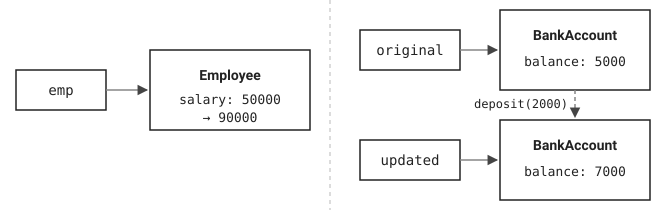

Immutability means that the state of an object cannot change after the object has been created. An immutable class is a class designed so that every object it produces has this property. Immutability is the principle; an immutable class is how you apply it.
Immutability matters in Java for object-oriented design, concurrency and thread safety, caching, hash-based collections, functional programming and distributed systems. Many core JDK types are immutable:
StringInteger, Long, Double and BooleanBigInteger and BigDecimalLocalDate, LocalDateTime and Instant from java.timeUUIDAn object’s state is the values of its instance fields, plus any observable data reachable through them. An object is mutable if that state can change after construction, and immutable if it cannot.
public class Employee {
private String name;
private int salary;
public Employee(String name, int salary) {
this.name = name;
this.salary = salary;
}
public int getSalary() {
return salary;
}
public void setSalary(int salary) {
this.salary = salary;
}
}Employee emp = new Employee("Alice", 50000);
System.out.println(emp.getSalary()); 50000
emp.setSalary(90000); The same object now has a different state
System.out.println(emp.getSalary()); 90000The key idea behind immutability is the difference between changing an existing object and creating a new object. On the left, a mutable Employee is changed in place, and every reference to it sees the new salary. On the right, an immutable BankAccount is never changed: deposit() returns a second object, and the original keeps its balance.

String works the same way. Its methods never change the string; they return a new one.
String str = "Hello";
str.concat(" World"); The result is discarded; str is unchanged
System.out.println(str); Hello
str = str.concat(" World"); The variable now refers to a new String object
System.out.println(str); Hello WorldThe second call does not modify "Hello"; it reassigns the variable to a different object. An immutable object is not the same thing as an immutable variable.
String original = "Hello";
String modified = original.concat(" World");
System.out.println(original); Hello
System.out.println(modified); Hello World
System.out.println(original == modified); false: two different objectsfinal and immutability are related but not equivalent. A final variable or field cannot be reassigned, but the object it refers to can still be mutated if its class is mutable.
final int x = 10; x = 20; would not compile
final StringBuilder sb = new StringBuilder("Hello"); sb = new StringBuilder(); would not compile
sb.append(" World"); Allowed: the reference is final, the object is mutable
System.out.println(sb); Hello World
String name = "Alice";
name = "Bob"; Allowed: the variable is not final, but no String object changed| Declaration | Reassign the reference? | Mutate the object? |
|---|---|---|
final String | No | No |
String | Yes | No |
final StringBuilder | No | Yes |
StringBuilder | Yes | Yes |
final, so no subclass can add state-changing behavior.private and final.this escape during construction, for example by registering the object as a listener inside the constructor.public final class Employee { final: no subclass can add mutable state
private final String name;
private final int salary;
public Employee(String name, int salary) {
this.name = name;
this.salary = salary;
}
public String getName() {
return name;
}
public int getSalary() {
return salary;
}
}This class is immutable because String is immutable, int is a primitive, and nothing in the class can change its fields. Code such as emp.salary = 90000 or emp.setSalary(90000) does not compile.
On this page the fields of immutable classes are declared final on purpose: private final fields are part of what makes the classes immutable, and the Java memory model gives final fields a visibility guarantee that matters for thread safety.
A final field that refers to a mutable object, such as an ArrayList, only stops the field from being reassigned. The list itself can still be changed, both through the reference the caller passed in and through any getter that returns it.
public final class Department {
private final List<String> employees;
public Department(List<String> employees) {
this.employees = employees; Keeps the caller's list: shared and mutable
}
public List<String> getEmployees() {
return employees; Hands out the internal list
}
}List<String> names = new ArrayList<>(List.of("Alice"));
Department dept = new Department(names);
names.add("Bob"); Changes dept through the original reference
dept.getEmployees().add("Charlie"); Changes dept through the getter
System.out.println(dept.getEmployees()); [Alice, Bob, Charlie]A defensive copy is a new object made so that callers cannot change an object’s internal state through a shared reference. Copy mutable inputs in the constructor, and copy or wrap mutable outputs in getters.
public final class Department {
private final List<String> employees;
public Department(List<String> employees) {
this.employees = List.copyOf(employees); Unmodifiable snapshot of the caller's list
}
public List<String> getEmployees() {
return employees; Safe to share: nobody can modify it
}
}List<String> names = new ArrayList<>(List.of("Alice"));
Department dept = new Department(names);
names.add("Bob"); Has no effect on dept
System.out.println(dept.getEmployees()); [Alice]
dept.getEmployees().add("Charlie"); Throws UnsupportedOperationExceptionList.copyOf() (Java 10) returns an unmodifiable copy, and may return its argument unchanged if that is already an unmodifiable list. An older alternative copies first and then wraps the copy:
this.employees = Collections.unmodifiableList(new ArrayList<>(employees)); Copy, then wrap: safe
this.employees = Collections.unmodifiableList(employees); Wrapper only: the caller can still change the listCollections.unmodifiableList() on its own is not enough: it returns a read-only view, so changes made by the caller to the original list still show through.
Immutability gets harder when a field refers to a mutable object of your own, such as an Address with a setter.
public class Address {
private String city;
public Address(String city) {
this.city = city;
}
public String getCity() {
return city;
}
public void setCity(String city) {
this.city = city;
}
}If Employee stores the caller’s Address and returns it from a getter, both the caller’s reference and the getter can change the employee’s address. Copying in both directions closes both gaps:
public final class Employee {
private final String name;
private final Address address;
public Employee(String name, Address address) {
this.name = name;
this.address = new Address(address.getCity()); Defensive copy on the way in
}
public String getName() {
return name;
}
public Address getAddress() {
return new Address(address.getCity()); Defensive copy on the way out
}
}Address original = new Address("Delhi");
Employee emp = new Employee("Alice", original);
original.setCity("Mumbai"); Changes only the caller's Address
emp.getAddress().setCity("Pune"); Changes only the returned copy
System.out.println(emp.getAddress().getCity()); DelhiIn larger object graphs every mutable component must be protected in the same way. The simpler design is often to make Address itself immutable, for example as a record, so no copying is needed at all.
Shallow immutability means an object’s own fields cannot be reassigned, but objects reachable through them may still change. Deep immutability means no state reachable through the object can change. Copying a collection is shallow: the new list is unmodifiable, but its elements are the same objects.
public class Member {
public String name;
public Member(String name) {
this.name = name;
}
}List<Member> members = new ArrayList<>(List.of(new Member("Alice")));
List<Member> snapshot = List.copyOf(members); Copies the list structure, not the members
members.get(0).name = "Bob";
System.out.println(snapshot.get(0).name); BobFor deep immutability, either make the elements immutable too, or copy each element as well as the collection.
Immutable classes can still offer methods that look like modifications, often called withers, as long as they return a new object and leave the current one unchanged. Validation happens before the new object is created.
public final class BankAccount {
private final String accountNumber;
private final long balance;
public BankAccount(String accountNumber, long balance) {
this.accountNumber = accountNumber;
this.balance = balance;
}
public BankAccount deposit(long amount) {
if (amount <= 0) throw new IllegalArgumentException("Amount must be positive");
return new BankAccount(accountNumber, Math.addExact(balance, amount)); New object; this one is unchanged
}
public BankAccount withdraw(long amount) {
if (amount <= 0 || amount > balance) throw new IllegalArgumentException("Invalid withdrawal");
return new BankAccount(accountNumber, balance - amount);
}
public long getBalance() {
return balance;
}
}BankAccount original = new BankAccount("ACC123", 5000);
BankAccount updated = original.deposit(2000);
System.out.println(original.getBalance()); 5000
System.out.println(updated.getBalance()); 7000deposit() returns a separate value; it does not record a transaction anywhere. The JDK’s immutable types follow the same pattern:
LocalDate today = LocalDate.of(2026, 11, 14);
LocalDate tomorrow = today.plusDays(1); Returns a new LocalDate
System.out.println(today); 2026-11-14
System.out.println(tomorrow); 2026-11-15Records (Java 16) are a concise way to declare immutable data carriers. The compiler generates private final fields, a canonical constructor, accessors, equals(), hashCode() and toString(), and records cannot be extended.
public record Employee(String name, int salary) {}Employee emp = new Employee("Alice", 50000);
System.out.println(emp.name()); Alice
System.out.println(emp); Employee[name=Alice, salary=50000]Records are only shallowly immutable
A record’s fields are final, but the objects they refer to are not automatically immutable. A record holding a caller’s ArrayList can still change:
public record Department(List<String> employees) {}List<String> names = new ArrayList<>(List.of("Alice"));
Department dept = new Department(names);
names.add("Bob"); Changes the record through the original list
dept.employees().add("Charlie"); Changes the record through its accessor
System.out.println(dept.employees()); [Alice, Bob, Charlie]Fix: copy in a compact constructor
A compact constructor runs before the fields are assigned, so it can replace the argument with a defensive copy:
public record Department(List<String> employees) {
public Department {
employees = List.copyOf(employees); Runs before the field is assigned
}
}Because String elements are immutable, this record is effectively deeply immutable.
Mutable elements need deep copies
If the list holds mutable objects, List.copyOf() alone still shares them. Copy each element in the constructor and again in the accessor:
public record Department(List<Employee> employees) { Employee here is a mutable class
public Department {
employees = employees.stream().map(e -> new Employee(e.getName())).toList(); Copy every element
}
@Override
public List<Employee> employees() {
return employees.stream().map(e -> new Employee(e.getName())).toList(); Callers get copies
}
}Better: build the whole graph from immutable records
public record Employee(String name, int age) {}
public record Department(List<Employee> employees) {
public Department {
employees = List.copyOf(employees); Immutable list of immutable records
}
}Arrays are always mutable
An array component needs a copy on the way in and on the way out:
public record Polygon(int[] xs) {
public Polygon {
xs = xs.clone(); Copy on the way in
}
@Override
public int[] xs() {
return xs.clone(); Copy on the way out
}
}| Record | Deeply immutable? |
|---|---|
record A(int x) | Yes |
record A(String name) | Yes |
record A(LocalDate date) | Yes |
record A(List<String> names) | No, by default |
record A(List<String> names) with List.copyOf() | Yes |
record A(List<Employee> list) with List.copyOf(), where Employee is mutable | No |
record A(List<Employee> list) with List.copyOf(), where Employee is an immutable record | Yes |
record A(int[] values) | No, unless the array is copied in and out |
A properly constructed immutable object can be shared between threads freely: there is no mutable state to race over, so reads need no locks. The Java memory model also guarantees that other threads see the correct values of final fields once the constructor has finished, provided this did not escape during construction.
public record Config(String host, int port) {}void main(String[] args) {
Config config = new Config("localhost", 8080);
Runnable task = () -> System.out.println(Thread.currentThread().getName() + ": " + config.port());
new Thread(task, "T1").start(); No locks needed: config can never change
new Thread(task, "T2").start();
}A shared reference still needs coordination
Immutability protects the object, not the variable that refers to it. If several threads replace a shared reference, for example a field holding the current BankAccount or counter, the replacement itself must be atomic.
public record Counter(int count) {
public Counter increment() {
return new Counter(count + 1);
}
}void main(String[] args) throws InterruptedException {
AtomicReference<Counter> counter = new AtomicReference<>(new Counter(0));
Runnable task = () -> counter.updateAndGet(Counter::increment); Atomically swaps in the new value
Thread t1 = Thread.ofPlatform().start(task);
Thread t2 = Thread.ofPlatform().start(task);
t1.join();
t2.join();
System.out.println(counter.get().count()); 2
}updateAndGet() may call the update function more than once when threads collide, so the function must have no side effects. Immutable values make that easy.
Hash-based collections such as HashMap and HashSet place an entry by the key’s hash code when it is inserted. If a mutable key changes afterwards, its hash code changes too, and later lookups search the wrong bucket.
public class EmployeeKey {
public String department;
public EmployeeKey(String department) {
this.department = department;
}
@Override
public boolean equals(Object o) {
return o instanceof EmployeeKey other && Objects.equals(department, other.department);
}
@Override
public int hashCode() {
return Objects.hash(department);
}
}EmployeeKey key = new EmployeeKey("IT");
Map<EmployeeKey, String> map = new HashMap<>();
map.put(key, "Alice");
key.department = "HR"; The key's hash code changes after insertion
System.out.println(map.get(key)); Usually null: the entry is now unreachableAn immutable key cannot change after insertion, so lookups always work:
public record EmployeeKey(String department) {}Records work well for request and response DTOs whose components are immutable types.
public record CreateUserRequest(String name, String email) {}
@RestController
@RequestMapping("/users")
public class UserController {
@PostMapping
public ResponseEntity<String> createUser(@RequestBody CreateUserRequest request) {
return ResponseEntity.ok("Created: " + request.name());
}
}Domain objects with state transitions can also be immutable: each transition returns a new value instead of changing the old one. Persistence, concurrency and transactions still have to be handled separately.
public enum OrderStatus { CREATED, PAID, CANCELLED }
public record Order(String id, OrderStatus status) {
public Order markPaid() {
if (status != OrderStatus.CREATED) throw new IllegalStateException("Order cannot be paid");
return new Order(id, OrderStatus.PAID); The original Order is unchanged
}
}Functional code avoids modifying its inputs. Instead of changing a list in place, it builds a new value and leaves the old one intact, which makes each step easier to reason about and to test.
List<String> users1 = List.of("Alice");
List<String> temp = new ArrayList<>(users1);
temp.add("Bob");
List<String> users2 = List.copyOf(temp);
System.out.println(users1); [Alice]
System.out.println(users2); [Alice, Bob]| Concept | Meaning |
|---|---|
| Immutable object | Its observable state cannot change after creation |
final field | Cannot be reassigned after initialization |
final class | Cannot be extended |
| Unmodifiable collection | Changes through its own API are rejected, but it may be a view of a collection that can still change |
| Defensive copy | A copy that prevents sharing mutable internal state |
record | A concise data carrier with final fields; not automatically deeply immutable |
| Encapsulation | Controls access to internal state; an encapsulated class can still be mutable |
| Thread safety | Correct behavior under concurrent access; a mutable class can be thread-safe, for example with AtomicInteger |
| Mistake | Why it is wrong | Fix |
|---|---|---|
Only making fields final | Referenced objects can still change | Protect every mutable field |
| Returning an internal mutable list | Callers can change internal state | Return an unmodifiable snapshot or a copy |
| Copying a list but not its elements | Mutable elements remain shared | Use immutable elements or copy each one |
Collections.unmodifiableList(original) | The original list can still change underneath | Copy before wrapping, or use List.copyOf() |
Storing a java.util.Date directly | Date is mutable | Copy it, or use Instant |
| Assuming a record is deeply immutable | Components may refer to mutable objects | Copy components in a compact constructor |
Letting this escape from the constructor | Other code may see a half-built object | Never publish this during construction |
Pros
HashMap and HashSet lookups always work.Cons
Most production applications combine both: immutable values represent facts and data, mutable services coordinate change, concurrency primitives manage shared updates, and database transactions protect persisted state.
Can an immutable class contain mutable fields?
Yes, as long as that state can never be changed from outside: copy it on the way in and never hand out a reference to it.
Does final make an object immutable?
No. final prevents a field or variable from being reassigned; it does not stop the referenced object from changing.
Why is String immutable?
It allows strings to be shared and interned safely, keeps hash codes stable so strings work as map keys, and makes them safe to pass between threads and to security-sensitive code.
Are records always immutable?
Only shallowly. Their fields are final, but deep immutability depends on the component types and on defensive copying of mutable components.
Can an immutable class have methods that change values?
Yes, if they return a new instance with the updated values and leave the original unchanged, like String.concat() or LocalDate.plusDays().
Why declare an immutable class final?
So that no subclass can add mutable state or override methods in ways that break immutability. A class with a private constructor and static factory methods achieves the same.
final stops reassignment, not mutation.